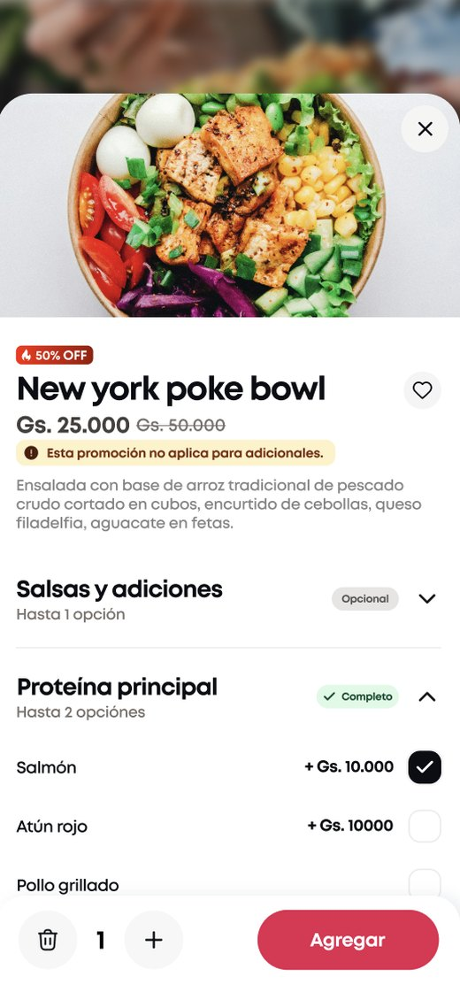
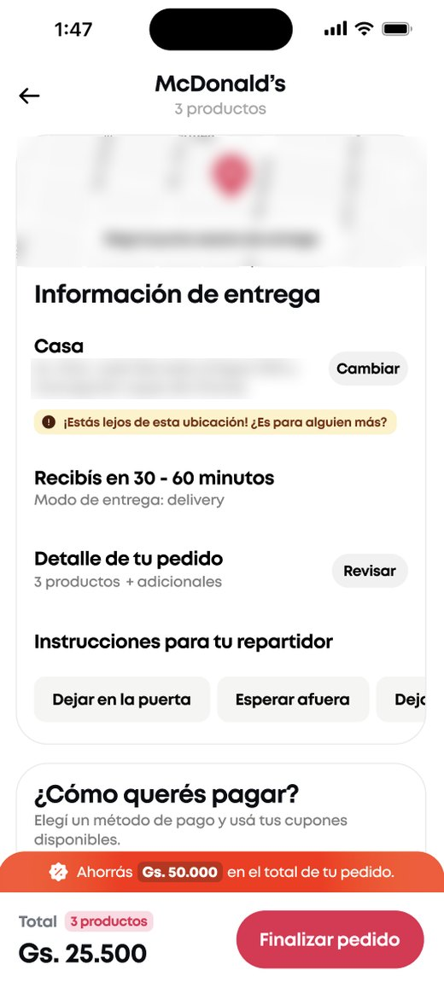

Caso 02 · Service Designer Ssr. · Monchis · 2026Case 02 · Service Designer · Monchis · 2026
Promociones que se ven, se entienden y se controlan.Promotions people can see, understand and control.
Dos frentes consecutivos sobre un mismo problema: que el usuario perciba y entienda el ahorro en la app, y que los equipos internos puedan crear, financiar y conciliar promociones sin romper el catálogo.Two back-to-back tracks on one problem: making savings visible and clear for app users, and letting internal teams create, fund and reconcile promotions without breaking the catalogue.
- RolRole
- Service Designer Ssr. · líder de benchmark y testing (front), autora del modelo de servicio y la migración (back)Service Designer · led benchmark and testing (front), authored the service model and migration (back)
- EquipoTeam
- Service Design junto a Valeria Alcaraz (Product Designer) y Ximena Bissieres (Content Designer). En sinergia con PMs, Tecnología, Marketing, Comercial, Catálogo y Administración.Service Design together with Valeria Alcaraz (Product Designer) and Ximena Bissieres (Content Designer). In synergy with PMs, Tech, Marketing, Sales, Catalogue and Finance.
- MétodoMethod
- Benchmark regional, journey TO-BE, pruebas de usabilidad, modelo operativo (flujograma) y plan de migración (demo y protocolo)Regional benchmark, TO-BE journey, usability testing, operating model (flowchart) and migration plan (demo and protocol)
- DuraciónDuration
- ~4 meses en dos etapas no consecutivas: 2 meses en Q1 (app) y 2 meses en Q2 (backoffice)~4 months in two non-consecutive stages: 2 months in Q1 (app) and 2 months in Q2 (back office)
Contexto y retoContext and challenge
Mucha inversión en ofertas, poca visibilidad y cero trazabilidad.Heavy spend on offers, low visibility and no traceability.
La gestión de ofertas era fragmentada y manual: había una inversión importante en descuentos sin reportería real sobre el retorno. El reto tenía dos caras, un problema visible para el usuario en la app y uno invisible para el negocio en el backoffice. Lo abordé en dos momentos para que, cuando la app estuviera lista, los equipos ya tuvieran cómo operarla.Offer management was fragmented and manual: there was significant spend on discounts with no real reporting on return. The challenge had two sides: a problem users could see in the app, and one the business couldn't see in the back office. I tackled it in two moments so that, when the app was ready, teams already had a way to run it.
Q1 · Front
Ofertas que no se veían ni se entendíanOffers nobody saw or understood
- 01Banners con poco contrasteLow-contrast banners
- 02Extras que encarecían el producto sin avisoExtras that raised the price without warning
- 03Costo de envío visible recién en el checkoutDelivery fee only visible at checkout
Q2 · Back
Riesgo financiero y catálogo duplicadoFinancial risk and a duplicated catalogue
- 04Comisiones mal calculadasMiscalculated commissions
- 05Promociones sin topes de presupuestoPromotions with no budget caps
- 06Productos duplicados para poder aplicar descuentosProducts duplicated just to apply discounts
Proceso y mi aporteProcess and my role
De la experiencia en la app a la operación interna.From the app experience to internal operations.
01 · Front
Benchmark regionalRegional benchmark
Comparé Rappi, PedidosYa y DiDi Food y traduje sus patrones en decisiones de diseño para Monchis.I compared Rappi, PedidosYa and DiDi Food and turned their patterns into design decisions for Monchis.
02 · Front
Journey TO-BE y pruebasTO-BE journey and testing
Facilité el journey con Product y Content Design, y moderé y sinteticé 9 pruebas de usabilidad con 7 tareas para priorizar ajustes antes del desarrollo.I facilitated the journey with Product and Content Design, then ran and synthesised 9 usability tests with 7 tasks to prioritise fixes before development.
03 · Back
Modelo operativo co-creadoCo-created operating model
Mapeé el AS-IS con cada área y co-creamos el TO-BE y las golden rules en mesas de alineación y validación.I mapped the AS-IS with each team and we co-created the TO-BE and golden rules in alignment and validation sessions.
04 · Back
Plan de migraciónMigration plan
Socialicé el nuevo flujo en una demo con todos los equipos y preparé el protocolo para migrar las promociones vigentes al nuevo sistema.I presented the new flow to all teams in a demo and prepared the protocol to migrate live promotions to the new system.
Hallazgos claveKey findings
El usuario no compra un porcentaje, compra un total.Users don't buy a percentage, they buy a total.
El delivery es el colador del descuentoDelivery drains the discount
El usuario valida la oferta contra el total del pedido: prefirieron menos descuento con envío más barato.Users judge an offer against the order total: they picked smaller discounts with cheaper delivery.
La trampa de los extrasThe extras trap
Si la ficha no aclara que los adicionales van a precio regular, la promo se siente engañosa en el carrito.If the product page doesn't say extras are full price, the promo feels misleading at the cart.
El naranja como disparadorOrange as a trigger
En la comparación de variantes, los tags naranjas captaron la atención más rápido.In variant comparisons, orange tags caught attention fastest.
Nadie había mapeado el AS-IS con los equiposNo one had mapped the AS-IS with the teams
Cada área operaba las promociones a su manera. En lugar de imponer un proceso, entendí el AS-IS con ellos y construimos juntos el TO-BE en mesas de alineación y validación.Each team ran promotions its own way. Instead of imposing a process, I mapped the AS-IS with them and we built the TO-BE together in alignment and validation sessions.
La campaña como contenedorThe campaign as a container
No debían existir banners huérfanos: cada pieza visual nace como contenedor de varias promociones.No orphan banners: every visual piece is born as a container for several promotions.
Un solo producto realOne real product
Los duplicados no eran un error operativo: faltaba poder aplicar descuentos temporales al producto original.Duplicates weren't an ops mistake: there was no way to apply temporary discounts to the original product.
Propuesta · FrontProposal · Front
Transparencia en cada paso del funnel.Transparency at every step of the funnel.
Ficha de productoProduct page
Transparencia proactivaProactive transparency
Aviso explícito de que el descuento aplica solo al producto principal, y desglose automático de los extras en el carrito.An explicit note that the discount only applies to the main item, and automatic extras breakdown in the cart.
Checkout
El ahorro, anclado al totalSavings anchored to the total
La barra de ahorro se movió junto al desglose final de cobro, para evitar la desilusión al ver el total.The savings bar moved next to the final breakdown, to avoid disappointment at the total.
ComponentesComponents
Tags y carruseles estándarStandard tags and carousels
Tags naranjas para la urgencia y carruseles ordenados por momento de consumo y nivel de beneficio.Orange tags for urgency and carousels sorted by meal moment and benefit level.


Propuesta · BackProposal · Back
Un modelo de servicio para crear, financiar y conciliar promociones.A service model to create, fund and reconcile promotions.
Nivel 1 · BrandingLevel 1 · Branding
CampañaCampaign
El banner y el contenedor estratégico.The banner and strategic container.
Nivel 2 · ComercialLevel 2 · Sales
PromociónPromotion
% de descuento, límite de unidades y tope de presupuesto con pausa automática.% off, unit limit and budget cap with auto-pause.
Nivel 3 · CatálogoLevel 3 · Catalogue
ProductoProduct
Asociado al SKU real, sin duplicados.Linked to the real SKU, no duplicates.
Flujo de trabajo entre 4 equiposWorkflow across 4 teams
CampañasCampaigns
AlineaciónAlignment
Se socializan las campañas del mes con antelación.Monthly campaigns are shared ahead of time.
Carga de campañasCampaign set-up
Quedan creadas antes de que se carguen promociones.Created before any promotion is loaded.
PromocionesPromotions
Negociación y creaciónNegotiation and set-up
Al cerrar el trato, Comercial la crea directo, sin depender de Catálogo.Once the deal closes, Sales creates it directly, without waiting on Catalogue.
TrazabilidadTraceability
Registro único compartido entre los equipos.A single shared record across teams.
ComunicaciónCommunication
Solo las promos más atractivas se comunican.Only the most attractive promos get communicated.
CierreClose
Conciliación y seguimientoReconciliation and tracking
Administración concilia cuentas y Comercial mide el desempeño.Finance reconciles accounts and Sales tracks performance.
ResultadosResults
Cuando la app salió, la operación ya estaba lista.When the app shipped, operations were already ready.
Cuando el desarrollo de la app estuvo listo, los equipos ya estaban alineados con el nuevo modelo y pudimos empezar a migrar todas las promociones vigentes al nuevo sistema de creación, para que se vieran reflejadas en la app.When app development was ready, teams were already aligned on the new model, so we could start migrating every live promotion to the new creation system and have it show up in the app.
UsuariosUsers
4.4 / 5
En claridad de promociones, destacando precios transparentes y sin condiciones ocultas.For promotion clarity, highlighting transparent pricing and no hidden conditions.
PresupuestoBudget
Inversión con controlSpend under control
La pausa automática por tope terminó con la inversión a ciegas.Automatic pausing at the cap ended blind spending.
CatálogoCatalogue
278 promociones migradas278 promotions migrated
Pasaron al nuevo sistema y dejaron de existir como productos duplicados en el catálogo.Moved to the new system and removed as duplicate products from the catalogue.
Time-to-market
Comercial con autonomíaAutonomous sales team
Antes cada promoción dependía de una solicitud a Catálogo. Ahora Comercial la crea en el backoffice apenas cierra la negociación.Every promotion used to depend on a request to the Catalogue team. Now Sales creates it in the back office as soon as the deal closes.